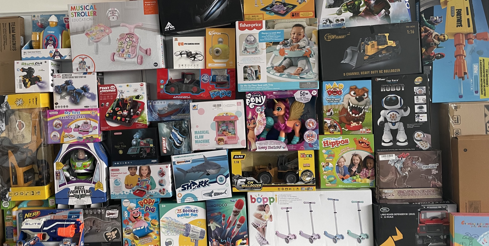
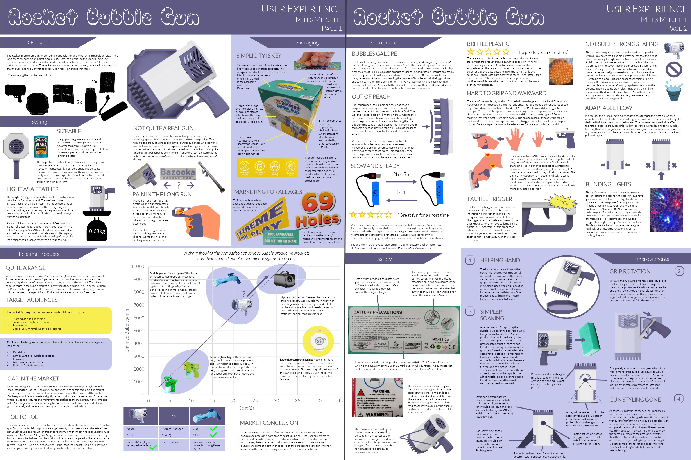
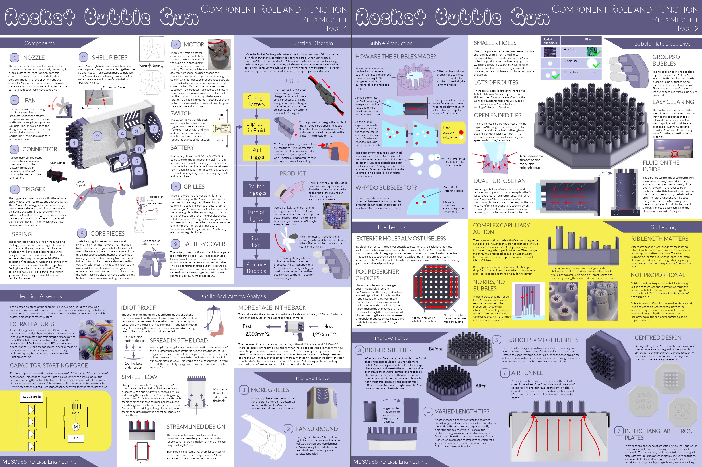
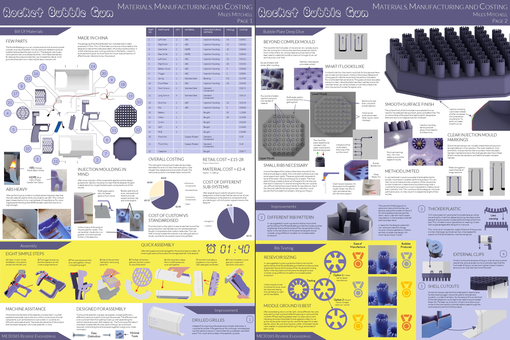
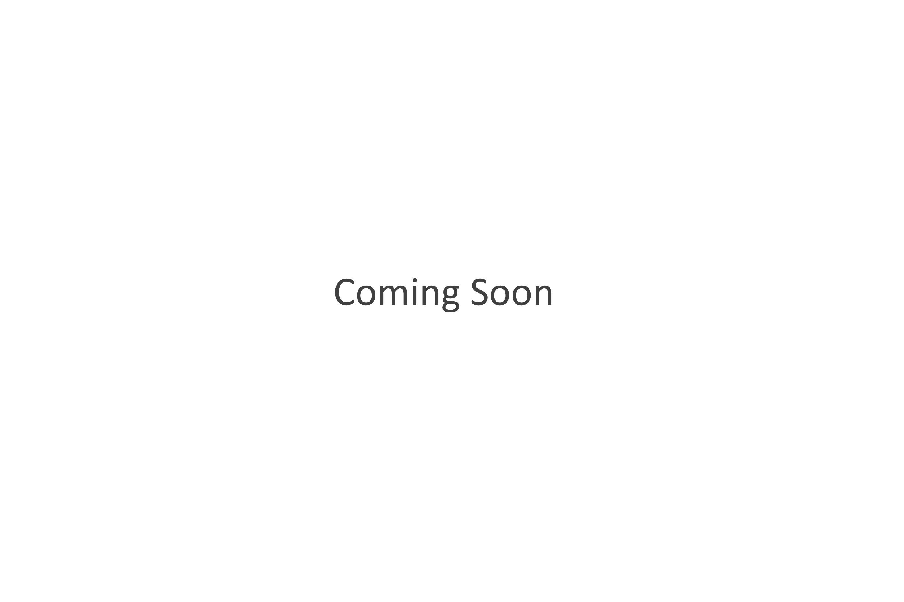

Reverse Engineering
The Reverse Engineering project took place during the first semester of my third year at university. The idea behind the project was to meticulously analyse a given product with respect to the: User Experience; Component Role and Function; Manufacturing, Materials and Cost; and Sustainability. Another aspect was to consider why the designer made the choices they did and to offer options of what they could have done to improve.
My cohort of students were all given childrens toys. My randomly assigned product was a large bubble gun. What follows are my posters of analysis. A large factor in the marking of this project was the presentation hence why an extra effort has been put into the diagrams and layout of text.
User Experience
Component Role and Function
Manufacturing, Materials and Cost
Sustainability